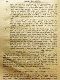
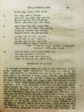
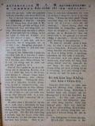
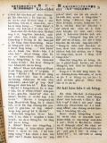
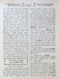

Languages
台文
｜
中文
｜
日本語
｜
English
字體
小
｜
中
｜
大
首頁
/
白話字數位典藏
白話字數位典藏全文檢索
查詢模式
選擇年代
清國時代(1885-1895)
日本時代(1895-1945)
戰後(1945-1969)
1885-1895
1896-1905
1906-1915
1916-1925
1926-1935
1936-1945
1946-1955
1956-1965
1966-1969
1970-1980
1980-1990
1990-2000
2000-2010
2010-
選擇文類
詩
散文
小說
戲劇
傳記
選擇作者
陳清忠
陳清義
編輯部
柯設偕
吳天命
明有德
偕叡廉
周天來
劉華義
王守勇
林茂生
陳添旺
王占魁
柯維思
賴仁聲
陳瓊琚
雪峰逸嵐
吳清鎰
郭水龍
蕭樂善
許水露
葉金木
陳金然
章王由
廖得
鄭連坤
潘道榮
楊士養
梁秀德
劉約翰
周淑慧
高金聲
林燕臣
黃六點
蔡愛義
許有才
主筆
巴克禮
陳鳩水
郭朝成
張基全
陳明清
陳能通
拾穗生
顏振聲
卓恆利
傳道局
胡文池
劉主安
鄭兒玉
其他
陳溪圳
劉奇水
Google Search
Yahoo Search
全部
刊名
標題
標題(教羅)
全文
全文(教羅)
作者
第90頁，共93頁(共1,848筆資料) 0.70152282714844sec
1
...
88
89
90
91
92
93
To Page
GO
文字列表
圖文列表
排序
日期
文類
刊名
作者
影像
[1926-1 芥菜子 文類-小說 作者-陳清忠/Tân Chheng-tiong ]
(4)
一滴一滴Ê水 [ CHI̍T TIH CHI̍T TIH Ê CHUÍ ]
「一滴一滴Ê水」 (1) 老ê獅 有一隻真老ê獅，倒佇土腳teh欲死 也以前捌予這隻獅處治ê獸，幾若隻來欲kā伊報仇。山豬就用伊ê牙撟伊ê腹肚 牛就用角觸伊ê kái邊；驢á也到，cha伊已經無危險，就越lìn轉，用兩支ê後跤，出力對面就kā伊踢去。可憐ê老將軍忍袂稠就haiⁿ一聲講「Ah，予你這扮貧賤ê獸，用腳來踢，實在比死一百遍khah艱苦！」 教示 陷害人ê人，著會記得伊後來也會拄著這款ê運...
[1926-1 芥菜子 文類-小說 作者-其他/Kî-tha]
(4)
聖經做滿足慾望Ê妙用 [ SÈNG-KENG CHOÈ MOÁ-CHIOK IO̍K-BÒNG Ê BIĀU-IŌNG ]
聖經做滿足慾望Ê妙用 人類佇地面上是做萬物ê頭，所以人類生存ê慾望比眾動物是khah強khah大。想到原始ê人teh生活ê款式，就知in ê慾望khah少，也知in ê性質kap道德甚麼款式。濟濟人teh講古早人khah老實，khah忠厚，khah無罪過；chiah-ê話是事實。Kiám-chhái有人欲反對講：無的確；毋過若kap聖經ê教示欲來相調和，袂免得著kap彼个講古早人khah無罪人共鳴。咱來看古早人也無聖經ê教示，也免受律法&e...
[1926-1 芥菜子 文類-散文 作者-陳瓊琚/Tân Khêng-ku]
(4)
儒教ê女性觀 [ JÛ-KÀU Ê LÚ-SÈNG KOAN ]
儒教ê女性觀 世界ê人數約有15億萬，內中一半thang講是女子。所以咱若來研究論in ê生活狀態，in ê地位，in所受ê待遇，佮in佇社會中所貢獻是啥物，以及別項等等是真心適閣也是真要緊。對早到今ná日，khah濟人論婦女這方面攏無致意，閣再真看輕--in。論in地位，待遇，教育等等所想著ê是真低。Taⁿ佇遮所愛寫淡薄做大家ê參考ê就是干但論儒教ê女性觀nā-tiāⁿ. 論儒教ê思想，咱知，thang講是重男輕女。咱若看易經就知佇彼內面有記載講「天尊地卑，乾坤定......」閣講「乾道成男，坤道成女。」看按呢就明白。閣再列子有「男尊女卑，故以男為（誤字nî）尊」總是列子其實毋...
[1925-7 芥菜子 文類-散文 作者-陳溪圳/Tân Khe-chùn]
(4)
毋通長短跤 [ M̄-Thang Tn̂g-Té-Kha ]
毋通長短跤 現時人若講主日學，就想是囡仔，若講佈道，就想是大人；按呢想也果然續按呢teh實行；其實基督ê意思kiám毋是ài主日學大人著在內，佈道囡仔著有份mah (馬太28:19-20.) 主日學kap佈道，形狀kap所做ê工有各樣，若是目的相款，平平是beh chhōa人到基督得著救，不過一爿是宣教的，一爿是教育的，教會若thang比並做身軀，就佈道kap主日學thang講教會ê兩支跤。教會teh求上帝國臨到求人ê得救，卻是對聖神kap恩典，總是彼个機關thang講著對佈道kap主日學，就是宣教k...
[1925-7 芥菜子 文類-詩 作者-陳清忠/Tân Chheng-tiong ]
(4)
囡仔KAP天使 [ GÍN-NÁ KAP THIN-SÀI ]
囡仔KAP天使 早起、下昏、中晝、暗時；施克來吟講：「呵咾上帝。」 後來越頭koh做伊ê工，來趁日日ê米糧。 伊做真thiám久koh gâu，頭毛垂落汗滿面。 常常佇做工ê中間，停睏，吟講：「呵咾上帝。」 然後pho̍ah伊ê頭毛佇後面，歡喜koh再起工。 牧師講：「按呢真著，無僥疑上帝有聽著lah！ 今仔日你所呵咾ê聲，無khah 輸上帝ê大奴僕。 伊佇這個救主koh活ê日，踮佇殿堂呵咾上帝。」 施克來講：「願上帝予我用彼個方法內呵咾伊，也死！」 暝過，日曝，...
[1925-7 芥菜子 文類-散文 作者-陳能通/Tân Lêng-thong]
(4)
科學雜略 [ KHO-HA̍K CHA̍P-LIO̍K ]
科學雜略 咱日常ê生活，所teh經驗ê現象（就是物ê變化：親像火炭teh焯、天氣teh 變、風teh吹、水the流、動植物teh生長逐項）真濟是自然科學（就是研究自然界ê現象ê學問。）所teh研究ê問題kap材料。所以咱ê五官日暝所teh經驗ê事物、teh變遷ê原因，對科學ê方面thang拆明。猶久濟濟人khah上是用臆--ê，罕得詳細kā查考彼个源頭。常常teh看ê物、teh聽ê事，á是所teh用ê物件，若...

[1925-7 芥菜子 文類-散文 作者-郭水龍/Keh Chuí-lêng]
(4)
巡視東部教會 [ SÛN-SĪ TANG-PŌ͘ KÀU-HOĒ ]
巡視東部教會 佇5月7日我去巡花蓮港、台東2廳ê教會；也續佇花蓮港鳳林鬥做奮興會ê工。論花蓮港教會比2年前有khah活動，前ê傳道對天國ê事業無teh致意教會泠淡，失落亦無chhōa見，就現時猶有找無著ê會友無來禮拜。教會總數250名，戶數47戶；守禮拜80外名，主日學有40外ê。拜堂壁有淡薄歹，有題緣緊欲修理：會友聽見講拜堂欲換位毋甘，因為彼位真清休，也真高、真闊，街市有水害ê煩惱，捌淹2尺外高，所以官廳有做堤防teh保護；會友不止好趁食，袂艱苦，khah濟攏是前山搬去ê會友，是欠培養。 ...
[1925-10 芥菜子 文類-散文 作者-劉約翰/Lâu Iok-hān]
(4)
基督徒著怎樣奮鬥 [ KI-TOK-TÔ͘ TIO̍H CHÁIN-IŪN HÙN-TÒ͘ ]
基督徒著怎樣奮鬥 簡略分5項來論：－1. 事業上ê奮鬥，2. 學術上ê奮鬥，3. 環境上ê奮鬥，4. 人格上ê奮鬥，5. 真道上ê奮鬥，這世間就是戰場，人就是內中ê兵士，若是ài得著得勝，的確著ài出力奮鬥。達爾文有講「袂奮鬥--ê就輸」奮鬥是啥物？就是現在ê咱，向前要求咱ê生活，改造四圍，以及去應困難。一般ê世人用奮鬥做要緊，咱做基督徒kiám thang踮踮teh坐？基督徒若袂會奮鬥來引chhōa社會入新ê生活，...
[1925-10 芥菜子 文類-散文 作者-吳天命/Gô͘ Thian-bēng]
(4)
你看，in落山啦! [ LÍ KHOÀN IN LO̍H SOAN LAH! ]
你看IN落山LAH！ 佇7月初，咱北部教會ê傳教師聚集佇淡水ê山仔頂。經過10日久，佇彼中間咱ê眾先生的確有得著濟濟ê教示kap修養。咱ê先生佇逐所在出力kap魔鬼交戰，koh再保護教示咱；的確著有機會thang予in靜想，咱做羊ê應該著夯雙手來歡迎！斷斷毋thang嫌咱ê牧者是ài thit-thô。 Koh-khah thang予咱歡喜--ê，就是看in teh落山。10日久經過了後，大家歡歡喜喜落山到佇四方。我拄好有機會thang看見。你看，in落山la...
[1925-10 芥菜子 文類-散文 作者-劉奇水/Lâu Kî-súi]
(4)
宗教Ê進化 [ CHONG-KÀU Ê CHÌN-HOÀ ]
宗教Ê進化 人若研究比較解剖學kap胚胎學，就不得不著承認進化ê你。所以研究比較宗教學，就不得不著承認宗教進化是事實。干但照美國來論，對1893年，世界宗教會議（聚集佇芝加哥市）漸漸已經有人承認各宗教to有sio-siāng ê點，也有重處ê所在。也同時赴會ê人，已經刺激--著著研究別宗教ê要緊，了後，就知基督教中濟濟要緊ê教義是對久久ê源頭來--ê。著者佇遮無ài詳細討論宗教進化ê增差，所講是簡單若定；因為這個-ba̍k有濟濟gâu &eci...

[1925-10 芥菜子 文類-散文 作者-陳清忠/Tân Chheng-tiong ]
(4)
湯匙Ê時代 [ THNG-SÎ Ê SÎ-TĀI ]
湯匙Ê時代 佇正月時為著食siuⁿ濟會害嘴齒ê物，致到嘴齒疼。父母teh欲chhōa in ê囝兒去找齒科醫ê時的確袂免得無想，也奇怪講：遐个無文明ê野蠻人，怎樣袂予嘴齒疼來苦楚in。野蠻ê人無倚靠刀仔á是別項物，in會食真碇ê肉－這實在是為難ê事－。人講按呢反轉予in ê嘴齒不時勇健。刀仔以及別款ê器具，á是料理術，強強teh欲予人變做無嘴齒ê動物。真濟款ê嘴齒病，野蠻ê人kap in攏毋相識；獨獨文明&...
[1926-1 芥菜子 文類-小說 作者-陳清忠/Tân Chheng-tiong ]
(4)
聖誕歌 [ SÈNG-TÀN-KOA ]
聖誕歌 （第三回。續接前號） 時鐘tú tân一點的時，忽然有大光照入房間，第一的神就入--來。伊的面是親像囡仔；頭毛白親像老人。身軀穿白長衫，衫á裾滾玫瑰花。手裡有giâ青翠的 「to-lô葉(holly聖誕的時用的植物的名)大光鑿著Kian-līn的目睭，就tah-hiahN精神，著一驚，就問 講：「你啥人？」 神。我就是過了(早前)聖誕的神。 Kian-līn。過了真久--ê是毋？ 神。你的過了lah！我來是為著你一生的安寧。起來佮我相佮行！ Kian-lîn。外面真寒－我穿薄薄－閣再我有感著－ 神。是為著欲救你。著聽！ Kian-līn。好lah！我欲去...

[1926-9 芥菜子 文類-散文 作者-陳清義/Tân Chheng-gī]
(4)
基督教佮孔子教的研究 [ Ki-tok-kàu kap Khóng-chú kàu ê Gián-kiù ]
基督教佮孔子教的研究 近來濟濟所在teh興起孔教。照in teh誇口講，現今的社會遐爾腐敗，若無孔子的道理來挽回，無法得。佇台北市 teh設法欲起聖廟，不止濟人寄付，氣力連鞭便。閣捌聽見in也捌批評基督教。今我愛將兩教所研究的幾若項來寫佇下底。 1、 論兩教的出產地。 基督教出產佇猶太國。孔子教出產佇中國。國，雖各樣；洲，就是相同。人常常講，基督教是西洋的宗教；其實是代先發展對西洋去nā-tiāⁿ。 2、 論兩教來台的沿革。 基督教來台灣有60外年久，對彼tia̍p到今，相接紲無隔斷。卻照歷史來研究，1626年拄300年前，有荷蘭人來佈教，彼tia̍p是明朝天啟皇帝坐位 6年的...
[1926-11 芥菜子 文類-散文 作者-陳清忠/Tân Chheng-tiong ]
(4)
聽候主閣來 [ Thèng-hāu Chú koh lâi ]
聽候主閣來。 基督教信仰的基礎是真單純，親像囡仔款，若將教理抑是神學上的裝飾共伊提開，就按呢提出佇理智抑是常識的面前來看，實在是親像一款的神話，抑是一款的故事而已。 佮上帝saⁿ-kap佇teh，尚且有份佇創造萬有的耶穌，來化做人，來成人的聖，人的肉；伊做一个平常的人，行佇湖邊，食麵包；後來流血，死了三日復活，四十日就上天；後來欲閣來。信者忍受萬項的艱苦，teh向望伊閣來；所以世間的學者，有智識的人teh袂了解，算是無奇怪的事。 若是將基督的昇天佮再臨，想做是kan-ta 的形容，抑是夢想；教會隨時失力，信者就tuh-bîn，佇遐就加添地上佮肉體的向望。 若是將這个信做親像加利利討海...

[1926-12 芥菜子 文類-散文 作者-陳清忠/Tân Chheng-tiong ]
(4)
世界教化的使命 [ Sè-kài kàu-hoà ê sú-bēng ]
世界教化的使命。 若讀馬太二十八章最後的記事，就通看著復活的主佇加利利湖邊的一个小山頂，親身出現予伊的學生看，紲將世界教化的大命予--in。 耶穌傳命令的山，無tú-tú知是啥物山，kiám-chhái是san-siōng說教的山；保羅佇哥林多前書第十五章六節所講「閣一擺出現予五百外的兄弟siâng-時看見」，無定著是siâng這个時。 抹大拉的馬利亞佮別的馬利亞佇墓前看見主的時，主講，「莫得驚，」去報我的兄弟，kah in去加利利，佇遐欲看見我。」kiám-chhái佇加利利，有比驢太較濟共鳴者佇teh 的因端。除去猶太以外十一个學生攏轉去佇遐見主。 有人講主的復活，毋是一般客觀的...
[1927-1 芥菜子 文類-散文 作者-陳清忠/Tân Chheng-tiong ]
(4)
十字架的路 [ Si̍p-jī-kè ê Lō͘ ]
十字架的路 十字架的死，贖罪的血，任你按怎想，佇這个以外無有真的宗教。基督教的根底是血，是犧牲的死lah！上帝的囝為著咱死，咱猶原著為著伊佮伊所疼的靈魂來死！ 希臘式的生活，今旦日所叫做文化的生活袂得通飽足的因端，是因為無死lah！In 的生活，的眼目就是秋天的花，秋天的日，情的滿足，肉的（jio̍k-tek）快樂。佇啥物所在有犧牲的死，對信的服從ah！In kan-ta求爽快來活，無愛死了來得著活。In無了解犧牲生活的尊貴，也無了解伊的氣力的大。 雖然講死，iáu-kú毋是自然tek 的死。佇上帝的bīn-bêng，為著上帝來thâi死家己的心肝，釘家己的意志佇十字架，撲殺(phok-...
[1927-4 芥菜子 文類-小說 作者-偕叡廉/Kai Jōe-liâm]
(4)
赴家己的葬式 [ Hù ka-kī ê chòng-sek ]
赴家己的葬式 我就是猶太人。對細漢得著爸母的教示，嚴守摩西的律例。老爸雖然sàn-chhiah，但是伊的學問深，厝邊頭尾也真尊敬伊。伊做猶太教的先生，勢力也毋是小可。 較大漢的時我捌聽見基督教的人teh講，耶穌就是救世主。伊是彌賽亞。起頭聽見按呢我的心不止反對，因為阮猶太人無承認耶穌做上帝的囝。阮kan-ta對重舊約聖經nā-tiāⁿ。新約阮無承受。毋kú ná研究證據ná明，我袂免得就近主，認伊做我的中保。 對這時了後，我常常去拜堂禮拜，我也真致意研究新約的道理。老爸聽見這个代誌隨時發出真大受氣。老母的受氣也真非常。暝日吼無煞，伊看我ná 犯人。姊妹以及親戚無一个無窘逐我。起頭笑我，...
[1927-10 芥菜子 文類-散文 作者-陳清忠/Tân Chheng-tiong ]
(4)
兒童中心的基督教 [ JÎ-TÔNG TIONG-SIM Ê KI-TOK-KÀU ]
兒童中心的基督教 TIÂN CHHOAN TI̍T-SIN 著 陳清忠 譯 第一章 「基督教的精神」 oa̍t-Joē-le̍k (G.F. Watts)是英國出名的畫工，伊佇1904年7月過身，享壽87歲。伊有流濟濟的宗教畫 (圖)佇後世，人若看伊的圖就會明白，知伊m̄-nā是富有佇預言tek (預言的)精神的人閣再是有創造tek(創造的)才能(才能) 的畫工。中間伊所第一貢獻佇萬國的基督徒的名畫就是彼張基督教的「精神」-基督坐佇雲頂，伊的腳頭u的有四個赤體的細漢囡仔佇teh，基督倒手比心肝，正手比chiah的細囝。 若講基督教的精神，萬人的確teh欲異口同音來叫講...
[1927-11 芥菜子 文類-散文 作者-陳清忠/Tân Chheng-tiong ]
(4)
兒童中心的基督教 [ Jî-tông Tiong-sim ê Ki-tok-kàu ]
兒童中心的基督教 (續接前號) 第三章 全能的上帝疼極端 (過頭)。 拍算，予近代的讀書界鬧熱的書籍(冊)，無有一本贏過Pa-pí-nî所著的 「基督傳。」連日本to有兩款的翻譯書。總是用研究的精神來讀一本傳記的人有幾個？拍算彼个數是真少。人人有各樣的趣味，無論teh讀甚物冊，若是有深深合佇家己的趣味--的，就特別較注意，這是自然的理。今仔日的牧師傳道師(台灣？)對佇兒童這方面無甚物有趣味的款，所以研究兒童的精神有缺乏。今仔日的傳教師的冊櫥內內，tàu-tih毋知有幾本關係兒童的冊佇teh？ 幾若年前，我捌佇某出名牧師的讀冊廳借過一暝，隔日透早起來，冊櫥內幾若百本的中間，揣無半本關...

[1927-11 芥菜子 文類-散文 作者-張基全/Tiuⁿ Ki-choân]
(4)
製鹽工業 [ Chè-iâm kang-gia̍p ]
製鹽工業 (續接前號) 這款岩鹽有的真清氣，親像德國所出的岩鹽，自按呢毋免閣精製就會食，用得，閣再Stassfurt地方的岩鹽的囥床有1200到3000尺hiah厚，所以通講規山to是鹽。 有人kiám-chhái欲想講佇陸地ná會有鹽hiah濟佇teh？照現今的學者研究，岩鹽猶原是海水漸漸厚來結成的，後來彼个地方受著地勢的變遷，予塗石蓋去。照岩鹽來看，第一下跤層是鹽化加里(鹽化加里)。中層是鹽......鹽化曹達)。頂面層是鹽化苦土......(鹽化苦土)這按呢tú-tú是將海水共伊蒸發(煮)予伊直直厚，就照頂面岩鹽的款式對鹽化加里，後來鹽，第一路尾才鹽化苦土的順序直直析出沈...
第90頁，共93頁(共1,848筆資料)
1
...
88
89
90
91
92
93
To Page
GO
數位典藏國家型科技計劃
拓展台灣數位典藏計畫
版權所有 國立台灣師範大學 台灣文化及語言文學研究所©2008
10610 台北市和平東路一段162號│TEL 02-7734-5516│Fax 02-2358-2461
計劃簡介
典藏特色
執行架構
計畫典藏數位化流程
成員介紹
台灣白話字發展簡介
巴克禮牧師與《台灣教會公報》
廈門話字典-杜嘉德
白話字教學-打馬字
中國南方白話字發展
台灣基督教長老教會簡表
台灣基督教長老教會教會歷史委員會
《北部台灣基督長老教會教會ê歷史》
關於陳清忠
白話字文學：台灣文學的早春